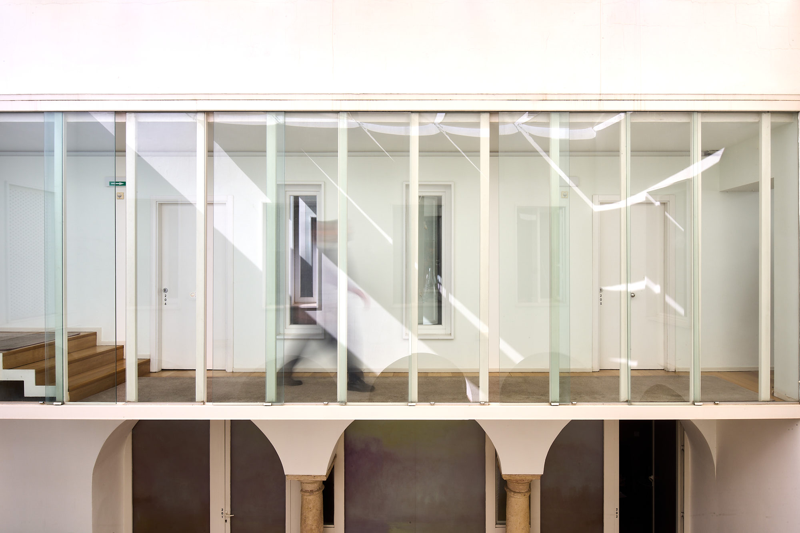

Una casa que acoge
y enamora
Antes de ser hotel, estas paredes formaron parte del antiguo Hospital de los Santos Mártires, un edificio mudéjar levantado entre los siglos XV y XVI. En aquel tiempo, un hospital era ante todo una casa de acogida, un lugar donde se recibía a quien llegaba necesitado de cuidado y de descanso. Hospital y hospitalidad comparten raíz, la misma palabra latina que nombraba a la vez al huésped y al anfitrión, y la casa parece haberlo recordado. Con los siglos cambió de uso, pero conserva el fondo de la palabra, que es acoger.